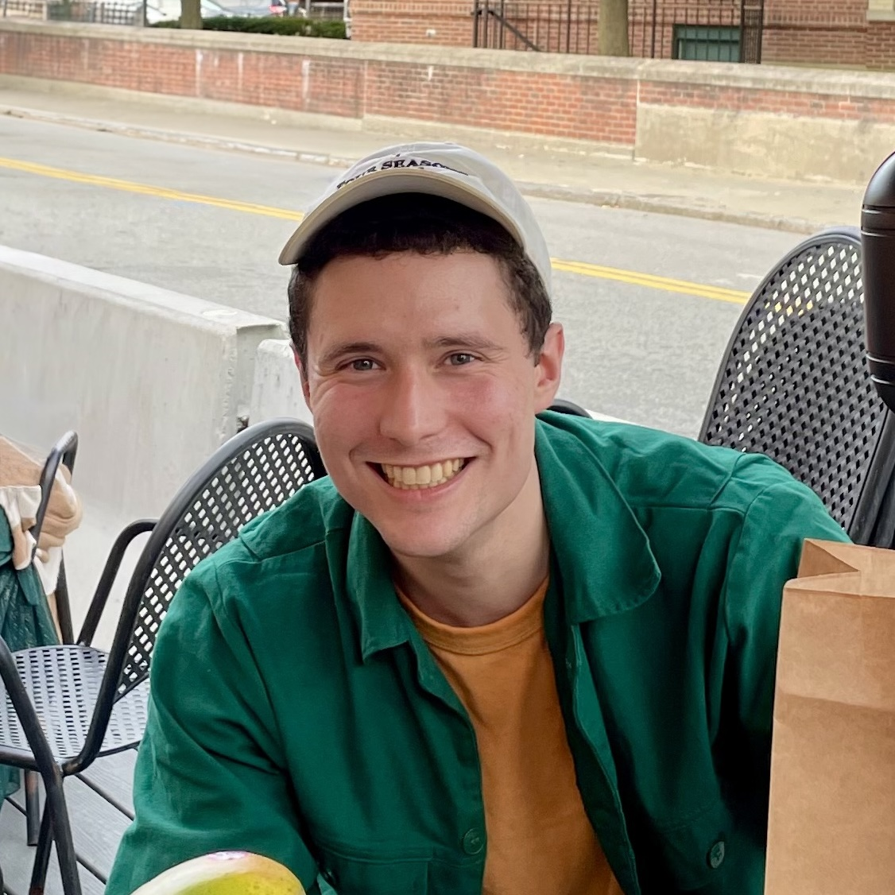

|  |
Logan EngstromEmail: engstrom@mit.eduGoogle Scholar: here CV/Resume: here GitHub: @lengstrom |
I am a final year PhD student at MIT EECS advised by Aleksander Mądry and funded by a Google PhD Fellowship. I am excited about basic research across machine learning, including in data attribution/selection, adversarial examples, deep RL, the science of DL, and accelerating ML systems.
I spent four delightful years at MIT for undergrad and grew up in Massachusetts. Outside of research, I really like programming and playing pickup soccer.
Andrew Ilyas, Sam Park, Logan Engstrom, Guillaume LeClerc, Aleksander Madry. Datamodels: Predicting Predictions from Training Data. ICML 2022.
Logan Engstrom, Andrew Ilyas, Shibani Santurkar, Dimitris Tsipras, Firdaus Janoos, Larry Rudolph, and Aleksander Mądry. Implementation Matters in Deep RL: A Case Study on PPO and TRPO. ICLR 2020 Oral Presentation.
Andrew Ilyas, Shibani Santurkar, Dimitris Tsipras, Logan Engstrom, Brandon Tran, and Aleksander Madry. Adversarial examples are not bugs, they are features. NeurIPS 2019 Spotlight Presentation.
Dimitris Tsipras, Shibani Santurkar, Logan Engstrom, Alexander Turner, and Aleksander Mądry. Robustness May Be at Odds with Accuracy. ICLR 2019.
Anish Athalye, Logan Engstrom, Andrew Ilyas, and Kevin Kwok. Synthesizing Robust Adversarial Examples. ICML 2018, Demo at NeurIPS 2017 Machine Learning and Computer Security Workshop.